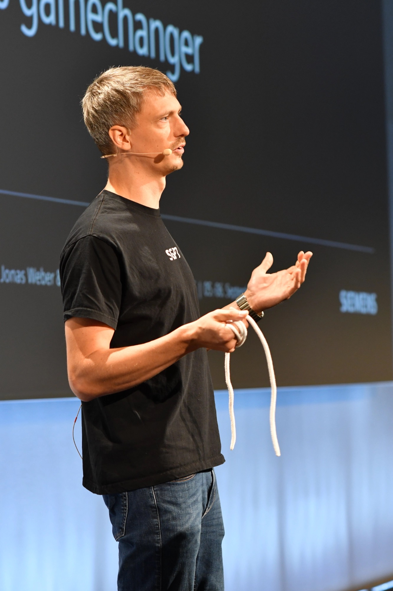

Hi, ich bin Jonas Weber.
Senior Frontend Developer, AI Pioneer & Angular Expert
Als Teil der Siemens Data and AI Cloud gestalte ich die Zukunft von AI im Konzernumfeld aktiv mit. Seit über 10 Jahren entwickle ich skalierbare Enterprise-Frontend-Systeme und nutze in der täglichen Arbeit modernste AI Coding Agents wie Claude Code und Antigravity.

Technologische Exzellenz & Leadership
Spezialisiert auf modernste Web-Technologien und zukunftssichere Frontend-Architekturen im Enterprise-Umfeld.
AI & Agentic Engineering
Teil der Siemens Data & AI Cloud. Mitgestaltung der Unternehmens-AI bei Siemens und täglicher Einsatz führender AI Coding Agents (Claude Code, Antigravity) zur Transformation von Developer Experience & Codequalität.
Angular Ecosystem
Tiefe Expertise in Angular, Signals, RxJS, NgRx, Standalone Components und Micro-Frontends. Performance-Optimierung und State-Management für komplexe Enterprise-Lösungen.
Enterprise Web Architecture
Design und Steuerung von modernen, modular skalierenden Frontend-Systemen. Einhaltung von Clean Code, barrierefreien Design-Systemen und automatisierten CI/CD-Pipelines.
Frontend Chapterlead & Leadership
Verantwortlich für Entwickler-Standards, Tech-Governance, Wissenstransfer und Mentoring im Global Marketing Service der Siemens AG.
Berufserfahrung & Ausbildung
Kontinuierlicher Wachstumspfad in Entwicklung, Consulting und Architekturanalyse.
IT Key Expert - Associate
Okt. 2025 – HeuteFührungs- und Experteneinflussrolle in der Siemens Data and AI Cloud. Mitgestaltung der Zukunft von AI im Unternehmen und täglicher Einsatz von AI Coding Agents (Claude Code, Antigravity) zur Etablierung moderner Entwicklungsplattformen.
Senior Consulting & Frontend Chapterlead
Juni 2020 – HeuteLeitung des Frontend Chapters, Definition technologischer Standards, Architektur-Review und Umsetzung komplexer Angular-Webanwendungen.
Consultant & Head of Development
Mai 2016 – Juni 2020Verantwortlich für die Entwicklungsleitung und Softwarearchitektur bei Web- und Marketinganwendungen im weltweiten Konzernumfeld.
Junior Consultant
2016 – 2018Entwicklung moderner User Interfaces und Betreuung digitaler Systeme im Marketingbereich.
Praktikant und Werkstudent
2014 – 2016Praktische Softwareentwicklung und Unterstützung bei enterprise Web-Projekten parallel zum Informatikstudium.
Studentische Hilfskraft & iOS App Entw.
2009 – 2014Programmierung von iOS-Apps (Apple iPhone & iPad "CIBEK Taster") sowie Entwicklung von Anwendungen im Bereich Hausautomatisierung und Ambient Assisted Living (AAL).
B.Sc. Informatik
2012 – 2016Bachelorstudiengang Informatik mit Schwerpunkt Softwaretechnik und Web-Technologien.
Ausbildung Elektroniker für Info- & Telekommunikationstechnik
2009 – 2012Erfolgreich abgeschlossene Berufsausbildung mit mehreren Landes- und Handwerksauszeichnungen.
Abitur
1994 – 2007Allgemeine Hochschulreife.
Vorträge & Konferenzen
Wissenstransfer, Best Practices und Impulse auf internationalen IT-Konferenzen.
Beyond CI/CD: How GitHub Workflows Became Our Developer Experience Platform
Einblicke, wie bei Siemens GitHub Workflows über klassisches CI/CD hinaus zur zentralen Plattform für Developer Experience und automatisierte Frontend-Governance entwickelt wurden.
Talk Details & AbstractGreen Field Development mit Angular
Fachvortrag zu Best Practices, Architekturentscheidungen und strukturiertem Aufbau von neuen Angular-Großprojekten auf der BASTA! Konferenz.
Session auf basta.netSpeaker @ DevOpsDays Graz 2025
Vortrag & Impulse zu modernen Frontend-Technologien, Developer Platform Workflows und skalierbarer Enterprise-Architektur im Siemens-Konzernumfeld.
Tech-Stack & Skills Matrix
Übersicht über meine primären Werkzeuge, Frameworks und Sprachen.
Frontend Engineering
AI & Developer Experience
Architektur & Cloud
Lass uns in Kontakt treten
Ob für fachlichen Austausch rund um Angular & Webarchitektur oder neue Gelegenheiten: